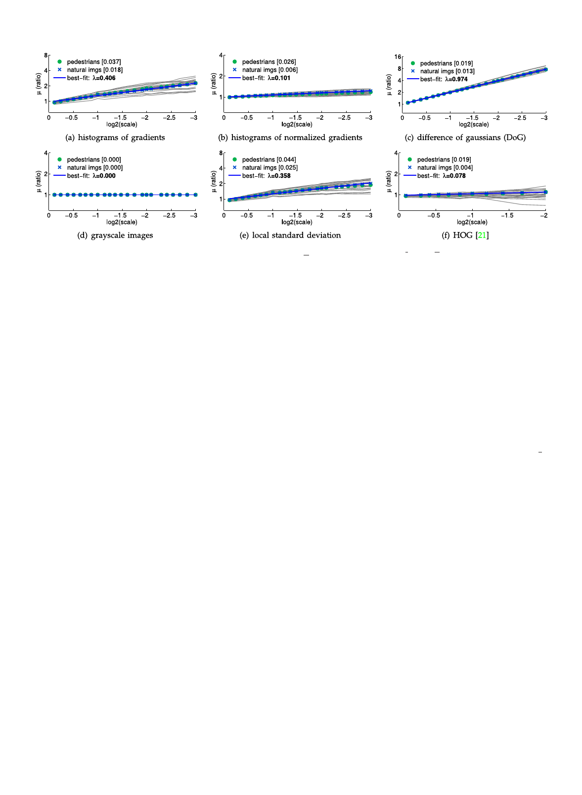

DOLLA�R ET AL.: FAST FEATURE PYRAMIDS FOR OBJECT DETECTION
1537
Fig.
3.
Power
law
feature
scaling.
For
each
of
six
channel
types
we
plot
ms
¼
1
N
P fVðIsiÞ=fVðI1i Þ
for
s
%
2À18 ;
..
.;
2À284
on
a
log-log
plot
for
both
pedes-
trian and natural image ensembles. Plots of fVðIs1 Þ=fVðIs2 Þ for 20 randomly selected pedestrian images are shown as faint gray lines. Additionally
the best-fit line to ms for the natural images is shown. The resulting � and expected error jE½Ej are given in the plot legends. In all cases the ms follow
a power law as predicted by Eq. (4) and are nearly identical for both pedestrian and natural images, showing the estimate of � is robust and generally
applicable. The tested channels are: (a) histograms of gradients described in Section 3; (b) histograms of normalized gradients described in Section
3.3; (c) a difference of gaussian (DoG) filter (with inner and outer s of 0:7p1 affiffiffinffiffiffidffiffiffi1ffiffiffi:ffi1ffiffiffi4ffiffi,ffiffiffirffieffiffiffisffiffipffiffi ectively); (d) grayscale images (with � ¼ 0 as expected); (e)
pixel standard deviation computed over local 5 Â 5 neighborhoods Cði;jÞ¼ E½Iði;jÞ2ÀE½Iði;jÞ; (f) HOG [21] with 4 Â 4 spatial bins (results were averaged
over HOG’s 36 channels). Code for generating such plots is available (see chnsScaling.m in Piotr’s Toolbox).
ms to have the form ms ¼ aVsÀ�V , with aV 6¼ 1 as an artifact
of the interpolation. Note that aV is only necessary for esti-
mating �V from downsampled images and is not used sub-
sequently. To estimate aV and �V, we use a least squares fit
of log2
puted
ðms0 Þ
over
¼ aV0 À �V log2ðs0
natural images
Þ to the 24
(and set
measurements com-
aV ¼ 2aV0 ). Resulting
estimates of �V are given in plot legends in Fig. 3.
There is strong agreement between the resulting best-fit
lines and the observations. In legend brackets in Fig. 3 we
report expected error jE½Ej ¼ jms À aVsÀ�V j for both natu-
ral and pedestrian images averaged over s (using aV and
�V estimated using natural images). For basic gradient his-
tograms jE½Ej ¼ 0:018 for natural images and jE½Ej ¼
0:037 for pedestrian images. Indeed, for every channel type
Eq. (4) is an excellent fit to the observations ms for both
image ensembles.
The derivation of Eq. (4) depends on the distribution
of image statistics being stationary with respect to scale;
that this holds for all channel types tested, and with
nearly an identical constant for both pedestrian and
natural images, shows the estimate of �V is robust and
generally applicable.
ss ¼ stdev½fVðIsiÞ=fVðI1i Þ ¼ stdev½E;
(6)
where ‘stdev’ denotes the sample standard deviation (com-
puted over N images) and E is the error associated with
each image and scaling factor as defined in Eq. (4). In
Section 4.2 we confirmed that Ep½Effiffiffiffiffi%ffiffiffi 0, our goal now is to
understand how ss ¼ stdev½E % E½E2 behaves.
In Fig. 4 we plot ss as a function of s for the same chan-
nels
as
in
Fig.
3.
In
legend
brackets
we
report
ss
for
s
¼
1
2
for
both natural and pedestrian images; for all channels studied
s1=2 < :2. In all cases ss increases gradually with increasing
s and the deviation is low for small s. The expected magni-
tude of E varies across channels, for example histograms of
normalized gradients (Fig. 4b) have lower ss than their
unnormalized counterparts (Fig. 4a). The trivial grayscale
channel (Fig. 4d) has ss ¼ 0 as the approximation is exact.
Observe that often ss is greater for natural images than
for pedestrian images. Many of the natural images contain
relatively little structure (e.g., a patch of sky), for such
images fVðIÞ is small for certain V (e.g., simple gradient his-
tograms) resulting in more variance in the ratio in Eq. (4).
For HOG channels (Fig. 4f), which have additional normali-
zation, this effect is minimized.
4.3 Deviation for Individual Images
In Section 4.2 we verified that Eq. (4) holds for an ensem-
ble of images; we now examine the magnitude of devia-
tion from the power law for individual images. We study
the effect this has in the context of object detection in
Section 6.
Plots of fVðIs1 Þ=fVðIs2 Þ for randomly selected images are
shown as faint gray lines in Fig. 3. The individual curves are
relatively smooth and diverge only somewhat from the
best-fit line. We quantify their deviation by defining ss anal-
ogously to ms in Eq. (5):
4.4 Miscellanea
We conclude this section with additional observations.
Interpolation method. Varying the interpolation algorithm
for image resampling does not have a major effect. In
Fig. 5a, we plot m1=2 and s1=2 for normalized gradient histo-
grams computed using nearest neighbor, bilinear, and bicu-
bic interpolation. In all three cases both m1=2 and s1=2 remain
essentially unchanged.
Window size. All preceding experiments were performed
on 128 Â 64 windows. In Fig. 5b we plot the effect of varying
the window size. While m1=2 remains relatively constant,